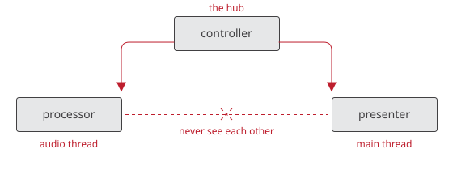

Architecture
Overview
A QPlug plugin is composed of three parts, each an ordinary class you write.

- processor
-
The DSP. Runs on the audio thread. Reads the controller’s parameters and processes audio in
process(in, out). - controller
-
The parameters and the logic that relates them, such as enabling a group of controls, units, tapering, and wiring between controls. Runs on the main thread. It is the hub the other two attach to, and is unaware of both.
- presenter
-
Builds the user interface and links it to the controller’s parameters. Owns the view, which exists only while the host has an editor open.
The processor and the presenter never see each other. Both reach the application’s state through the controller, which is what keeps the audio thread and the user interface independent.
Underneath sits base_plugin, the host adapter, whose header is format-free
and whose implementation lives in one file per format. Today there is one:
CLAP. VST3 and AudioUnit are produced from that same CLAP implementation by
clap-wrapper.
Dependencies
All dependencies are git submodules under lib/:
- q
-
DSP
- elements
-
GUI
- infra
-
shared utilities
- clap
-
the CLAP headers
- clap-wrapper
-
VST3 and AUv2
The last two are Cycfi forks of the upstream projects, so a fix QPlug needs can be carried until it is merged. They are used as they come: anything QPlug wants from them goes through their extensions, never by editing them.
The VST3 and AudioUnit SDKs are downloaded by clap-wrapper at configure time.